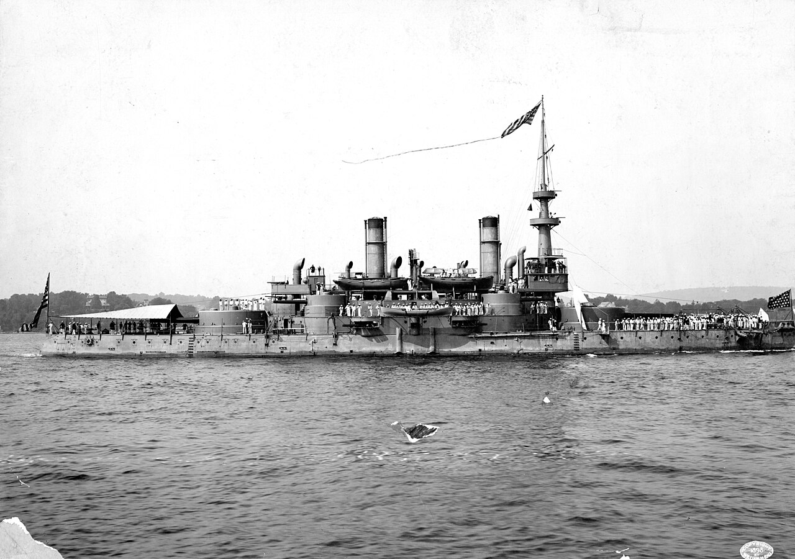
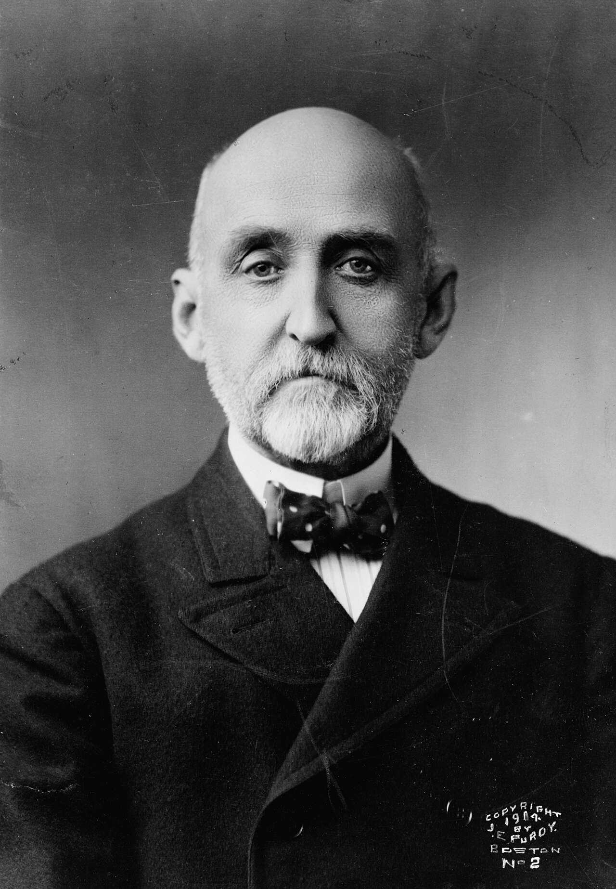
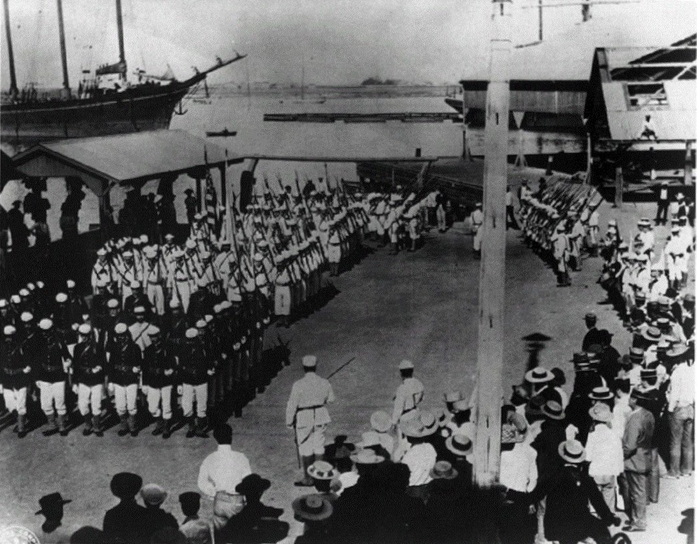
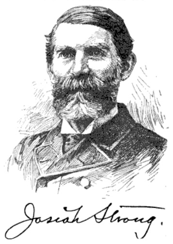
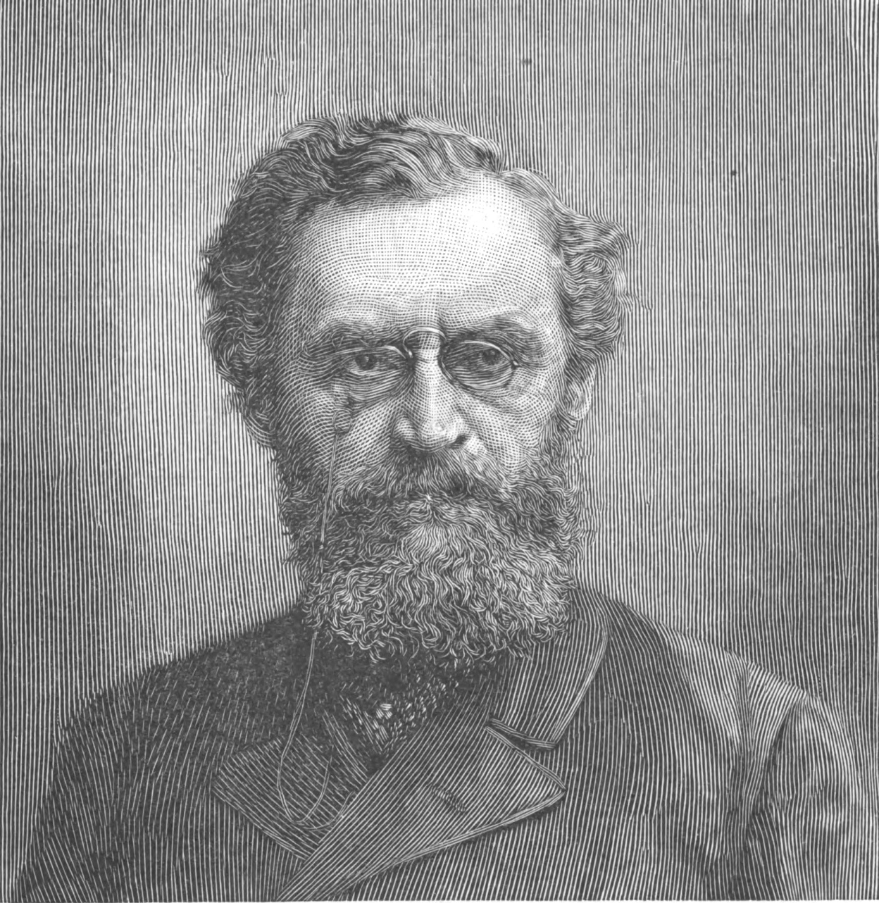

Directions: In the 1890s Americans argued about whether their country should take territory, markets, and influence overseas. Four stations present the motives expansionists offered, and a fifth presents the case against them. At each station, read the source, study the image, and answer the questions. At the end, rank the motives by the strength of the evidence and defend your ranking.

The ship in the photograph is what the argument produced. Steel battleships burned coal, carried limited fuel, and needed harbors, repair yards, and friendly ports on every route they served. The stations that follow present the reasons Americans gave for building such ships and for taking the places those ships would use.
Source: Alfred Thayer Mahan, The Influence of Sea Power Upon History, 1660 to 1783 (Boston: Little, Brown, and Company, 1890), as transcribed in Project Gutenberg eBook No. 13529. The second quotation is a sentence fragment quoted exactly as written; the words around it are Mahan's description of a government's duty in war.

"The history of Sea Power is largely, though by no means solely, a narrative of contests between nations, of mutual rivalries, of violence frequently culminating in war. The profound influence of sea commerce upon the wealth and strength of countries was clearly seen long before the true principles which governed its growth and prosperity were detected."
Mahan argued that sea power joined production, shipping, and colonies and stations that protected shipping. In war, he wrote, a government's influence would be felt "in maintaining an armed navy, of a size commensurate with the growth of its shipping and the importance of the interests connected with it." Congress acted on the argument the year the book appeared, authorizing the first three American battleships in the Naval Act of 1890. Theodore Roosevelt and Senator Henry Cabot Lodge carried Mahan's case into politics, and naval officers treated the book as a guide to strategy.
In Mahan's argument, what does sea commerce do for a country, and what must a government maintain to protect it? Answer from the quotations.
Why does Mahan's strategy require places outside the United States itself? Name two things a distant station provides that a home port cannot.
Source: Frederick Jackson Turner, "The Significance of the Frontier in American History," read in Chicago on July 12, 1893, and published in the Annual Report of the American Historical Association for 1893 (Washington, 1894). Turner opens the paper by quoting the Superintendent of the Census for 1890. Text as transcribed by Teaching American History and by Hanover College.
Turner began with the Census report. "Up to and including 1880 the country had a frontier of settlement, but at present the unsettled area has been so broken into by isolated bodies of settlement that there can hardly be said to be a frontier line."
He then argued that the frontier had formed the American character, and he refused to predict that its influence would simply stop. "Movement has been its dominant fact, and, unless this training has no effect upon a people, the American energy will continually demand a wider field for its exercise. But never again will such gifts of free land offer themselves."
His closing sentence gave the paper its fame. "And now, four centuries from the discovery of America, at the end of a hundred years of life under the Constitution, the frontier has gone, and with its going has closed the first period of American history." Turner named no colony and proposed no annexation. Expansionists who read him supplied the overseas conclusion themselves.
What had ended, according to the Census report Turner quoted, and what did Turner say the frontier had done while it existed?
Turner predicted that American energy would demand a wider field, but he did not say the field had to be overseas. What makes his paper useful to expansionists anyway, and what is the weakness in using it as evidence for annexation?
Source: Mahan, The Influence of Sea Power Upon History (1890), Chapter 1, Project Gutenberg eBook No. 13529, followed by a summary of the Pacific rights the United States already held in the 1890s. The Mahan sentence continues in the original; the cut is marked and the remainder of the sentence lists further posts of the same kind.

"Thus arose the demand for stations along the road, like the Cape of Good Hope, St. Helena, and Mauritius, not primarily for trade, but for defence and war; [...]"
A steam warship of the 1890s could not cross the Pacific on a single load of coal. Between California and Asia, Americans pointed to a chain of stops the United States already had rights to use. At Pearl Harbor in Hawaii, the renewal of the reciprocity treaty in 1887 gave the United States the exclusive right to enter the harbor and maintain a coaling and repair station there. At Pago Pago in Samoa, a treaty in 1878 gave the United States the right to establish a naval station in one of the finest harbors in the South Pacific. Midway Island, claimed in 1867, stood empty on the northern route. Each right had been obtained by treaty with a local government. None of the three places was American territory, and annexationists argued that rights held at another government's pleasure were rights that could be withdrawn.
Mahan says the demand for stations was "not primarily for trade, but for defence and war." What work does a coaling station do for a fleet, and why does that work have to be done along the road rather than at home?
The United States held treaty rights at Pearl Harbor and Pago Pago without owning either place. State the annexationist argument against settling for those rights, using the station text.
Source: Josiah Strong, Our Country: Its Possible Future and Its Present Crisis, revised edition (New York: American Home Missionary Society, 1891), first published 1885. Cuts are marked with ellipses. In the passage cut from the final sentence, Strong describes the Anglo-Saxon as the representative of the largest liberty, the purest Christianity, and the highest civilization.

"It seems to me that God, with infinite wisdom and skill, is training the Anglo-Saxon race for an hour sure to come in the world's future. [...] There are no more new worlds. The unoccupied arable lands of the earth are limited, and will soon be taken. [...] Then this race of unequaled energy, with all the majesty of numbers and the might of wealth behind it [...] will spread itself over the earth."
Strong was a Congregational minister writing for church readers, and his book began as a manual for the home missionary movement, the effort to send ministers and teachers into American towns and cities. He extended the same duty overseas. If Anglo-Saxon Americans carried civil liberty and what he called a pure spiritual Christianity, then expansion was not conquest. It was the delivery of the two things he believed mankind most needed, and opposing it meant withholding them.
What two great ideas does Strong say the Anglo-Saxon race represents, and what does he predict that race will do? Answer from the station text and the source note.
Strong calls the remaining lands of the earth "unoccupied." Who is left out of that word, and how does leaving them out make his conclusion easier to reach?
Source: Carl Schurz, "Manifest Destiny," Harper's New Monthly Magazine, October 1893, as reprinted in Speeches, Correspondence and Political Papers of Carl Schurz, vol. 5 (New York: G. P. Putnam's Sons, 1913), transcribed at Wikisource. The first passage ends mid-argument in the original; the cut is marked, and in the omitted sentences Schurz adds that all of this is possible without taking other countries into the Union.

"We can own plantations and business houses in the Hawaiian Islands. In the American tropics we can build and control railroads; we can purchase mines, and have them worked for our benefit; we can keep up commercial establishments in their towns [...]"
Schurz was answering the annexation drive of 1893, when the overthrow of Queen Liliuokalani had put Hawaii before the country. His warning closed the essay. "If they yield to the allurements of the tropics and embark in a career of indiscriminate aggrandizement, their 'manifest destiny' points with equal certainty to a total abandonment of their conservative traditions of policy, to a rapid deterioration in the character of the people and their political institutions and to a future of turbulence, demoralization and final decay."
According to Schurz, what can Americans have in Hawaii and the tropics without annexation? List three things from the quotation.
What does Schurz predict annexation will do to the United States itself? Name two effects from the quotation, and state which one he treats as the deeper loss.
Rank the four expansion motives from 1 to 4 by the strength of the evidence at the stations. Judge the evidence, not the motive you like best: a strong motive is one whose station shows a real condition in the 1890s and a clear thing the motive required the country to do. (1 = Strongest Evidence, 4 = Weakest Evidence).
______ Sea Power (Station 1, Mahan)
______ A Wider Field (Station 2, Turner)
______ Stations on the Route (Station 3, the Pacific rights)
______ The Mission (Station 4, Strong)
Defend your top choice in a short paragraph. Use specific evidence from its station, and compare it with evidence from at least one other station to show why your choice rests on stronger evidence.
Now answer the fifth station. State Schurz's strongest objection in your own words, and say whether the motive you ranked first answers that objection or leaves it standing. Use one fact from Schurz's station.
What does sea commerce do for a country, and what must a government maintain to protect it? Sea commerce is the source of national wealth and strength; Mahan calls its influence on both profound. To protect it, a government must maintain an armed navy sized to the growth of the country's shipping and the importance of the interests connected with it. Production, shipping, and the colonies and stations that protect shipping are the three linked parts of sea power in the station summary. Quotations are from The Influence of Sea Power Upon History, 1660 to 1783 (Little, Brown, 1890), Project Gutenberg eBook No. 13529.
Why does Mahan's strategy require places outside the United States? A fleet protects shipping where the shipping goes, and steam warships burn coal and carry a limited supply, so they must refuel, take on water and supplies, and make repairs along the route. A distant station provides fuel and repair within reach of the route, a defended harbor where ships can wait and concentrate, and a base from which a fleet can operate in wartime instead of returning home. Any two, explained, earn full credit.
What had ended, and what did Turner say the frontier had done while it existed? A continuous frontier line of settlement had ended, because isolated bodies of settlement had broken into the unsettled area. While it existed, the frontier had formed the American character, producing the energy, individualism, and democratic habits Turner treated as national traits, and the advance of settlement westward explained American development. Turner quotations are from "The Significance of the Frontier in American History" (1893), as published in the Annual Report of the American Historical Association for 1893.
What makes the paper useful to expansionists, and what is the weakness in using it as evidence for annexation? Useful, because Turner predicts in print that American energy will continually demand a wider field, which lets expansionists present overseas expansion as the continuation of the national pattern rather than a break with it. The weakness is that Turner does not draw that conclusion. He names no overseas field, proposes no annexation, and describes the gifts of free land as finished. The overseas step belongs to his readers, so the paper is evidence of a climate of thought, not of a policy argument.
What work does a coaling station do, and why along the road? A station stores coal, water, and supplies, offers repair facilities and a defended harbor, and lets a fleet stay on a distant route instead of returning to a home port when its bunkers empty. The work has to be done along the road because a steam warship's range is set by the coal it can carry; the fleet can operate only within reach of the next stocked harbor. Mahan's sentence is quoted from Chapter 1 of The Influence of Sea Power Upon History (1890); the sentence continues with a list of further strategic posts, and the cut is marked in the student text.
State the annexationist argument against settling for treaty rights. Rights at Pearl Harbor (1887) and Pago Pago (1878) existed at the pleasure of the Hawaiian and Samoan governments that granted them. A government could change, a rival power could press for the same harbor, and in a war the United States could not fortify or count on a harbor it did not control. Annexation, on this argument, converted a revocable permission into a permanent base. Accept answers that name the revocability of treaty rights as the core point.
What two great ideas does Strong say the Anglo-Saxon race represents, and what does he predict? Civil liberty and a pure spiritual Christianity. He predicts that the race, trained by God for a coming hour of final competition, will spread itself over the earth as the unoccupied lands are taken. The two ideas are stated in the station summary and source note; the prediction is in the quotation. Strong quotations are from Our Country, revised edition (American Home Missionary Society, 1891). The passage cut from the final sentence describes the race as the representative of the largest liberty, the purest Christianity, and the highest civilization, and says it had developed traits calculated to impress its institutions upon mankind.
Who is left out of the word "unoccupied," and how does leaving them out make the conclusion easier? The peoples already living on those lands, including Native peoples in North America and the peoples of Africa, Asia, and the Pacific islands. If the lands are unoccupied, taking them displaces no one and wrongs no one, so spreading over the earth can be described as settlement and service rather than conquest. Naming the inhabitants restores the question Strong's wording removes, which is by what right they are to be governed.
What can Americans have in Hawaii and the tropics without annexation? Any three from the quotation: plantations and business houses in the Hawaiian Islands; railroads built and controlled in the American tropics; mines purchased and worked for American benefit; commercial establishments in tropical towns. Schurz's point is that the economic gains expansionists wanted were already available by trade and investment. Quotation from "Manifest Destiny," Harper's New Monthly Magazine, October 1893, reprinted in Speeches, Correspondence and Political Papers of Carl Schurz, vol. 5 (1913), Wikisource transcription.
What does Schurz predict annexation will do to the United States itself? A total abandonment of the republic's conservative traditions of policy, a rapid deterioration in the character of the people and their political institutions, and a future of turbulence, demoralization, and final decay. The deeper loss, in Schurz's framing, is the internal one: the damage to the people's character and institutions, which he ranks above any gain in territory or trade. Accept either the traditions or the institutions answer as the deeper loss when the student explains the ranking from the text.
Student rankings will vary. Full credit should be awarded if the student:
Teacher note. This activity is tagged to Blueprint 1, the causes of American expansion in the 1890s. The ranking task is the formative signal for the writing task: students who cannot yet separate Turner's prediction from an annexation argument will need the distinction again before they write.